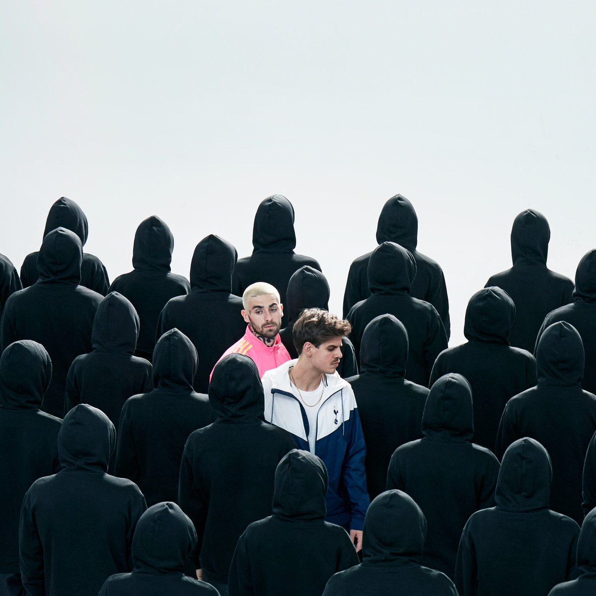

[Taco]
To niespotykane, każdy chciałby mnie dla siebie, a ja wolę poligamię
Chociaż jest to niemożliwe, ledwie żyję z sobą samym
Jem homara w pojedynkę, czuję się jak Colin Farrell
Prawie wjechał w szlaban, bo nikt nie otworzył bramy
Zawsze to robiła, znowu o tym zapomniałem
Po koncertach setne zdjęcie robię z fanem, pyta, czego słucham
czy znam taki raper Tory Lanez
Nawet nie mówię, że mówi się Tory Lanez
Prosi o zdjęcie i żebym podpisał mój nowy case
Zniknął gdzieś ochroniarz, znowu jestem osaczany
One chcą powtórzyć zdjęcie: sorry, wyszło rozmazane
Chcę już do niej wrócić, czekam aż założy szpilki
Jestem nowy Biggie, wtedy ona młodą Lil' Kim
Już nie widzę ludzi, tylko wszędzie wokół wilki
Pragnę żyć po śmierci, kiedy leci nowy Lil Peep
[Bedoes:]
Hej, hej, hej! Mała!
Ciągle zabijam emocje, gdybym tatuował łzy
jak Baka płakałbym do kostek
Powiedz, błagam, jak mam wydorośleć
Osiem kobiet, jeden pokój, a ja ciągle chcę dziewiątej
Mała!
Ciągle zabijam emocje, gdybym tatuował łzy
jak Baka płakałbym do kostek
Mamo!
Powiedz, błagam, jak mam wydorośleć
Osiem kobiet, jedne pokój, a ja ciągle chcę dziewiątej
[Quebe]
Zanim zrozumiesz, czemu znowu jestem sam
I zanim szepniesz: „Nie jestem taka, jak myślisz”
Zanim mi powiesz, że nie chodzi Ci o szmal
Weź te trzy stówy i wybierz wanna czy prysznic
Mam nadzieję, że jest ci trudno,tak jak mi
Te smutne oczy topią się w Margaret Astor
Stajesz na rzęsach, by zapomnieć każdą z chwil
Bo tamten uśmiech tylko dla mnie był jak Caston
Leci Jimi Jimi Hendrix, pachniesz Jimmy, Jimmy Choo
Tylko dziś nam miny zrzedły, stara miłość, inny wóz
Ty chcesz odejść, a nie możesz, one żebym brał je obie
Osiem kobiet, osiem kobiet kręci się po garderobie
Czuję się jak Jared Leto, Michaetl Douglas, Ryan Gosling
Wszystkie patrzą na ten sikor, na ten kajdan i chcą forsy
Jestem zepsuty, zgubiony, jestem gorzej niż najgorszy
Hotel, pasodoble, skarbie, znowu tańczę tu samotny
[Bedoes:]
Hej, hej, hej! Mała!
Ciągle zabijam emocje, gdybym tatuował łzy
jak Baka płakałbym do kostek
Powiedz, błagam, jak mam wydorośleć
Osiem kobiet, jeden pokój, a ja ciągle chcę dziewiątej
Mała!
Ciągle zabijam emocje, gdybym tatuował łzy
jak Baka płakałbym do kostek
Mamo!
Powiedz, błagam, jak mam wydorośleć
Osiem kobiet, jedne pokój, a ja ciągle chcę dziewiątej
[Bedoes:]
Musiałbym mieć Rary, by uciec przed problemami
One piszą tylko po to, żeby się pochwalić
Chcą tylko wieczoru z gwiazdą, chcą zrobić snapa z melanżu
Jeśli chcesz wieczoru z gwiazdą, to się przejdź do planetarium
Osiem kobiet, każda chce mnie zabrać tobie
Jeden pokój, osiem kobiet, recepcja wzywa ochronę
Mała, nie wstydź się, zgaś go o podłogę
Mała, nie bój się, jestem tu i ci pomogę
Osiem kobiet, każda chce mnie zabrać tobie
Jeden pokój, osiem kobiet, recepcja wzywa ochronę
Mała, nie wstydź się zgaś go o podłogę
Mała, nie bój się, jestem tu i ci pomogę
[Bedoes:]
Mała, ciągle zabijam emocje
gdybym tatuował łzy
jak Baka płakałbym do kostek
powiedz błagam jak mam wydorośleć
8 kobiet, jeden pokój
a ciągle chcę dziewiątej
Mała, ciągle zabijam emocje
gdybym tatuował łzy
jak Baka płakałbym do kostek, mamo!
powiedz błagam jak mam wydorośleć
8 kobiet, jeden pokój
a ciągle chcę dziewiątej